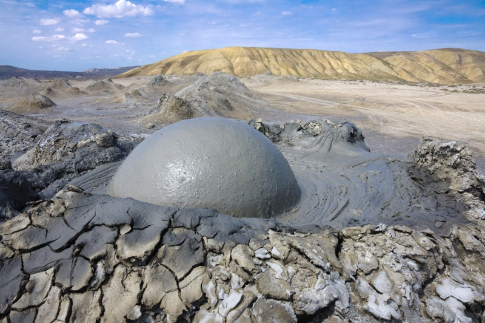
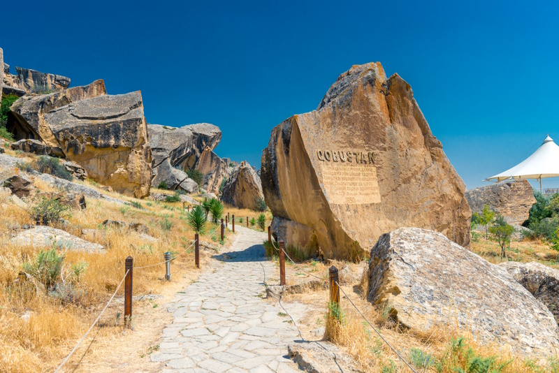

Yanar Dag
Yanar Dagh (Azerbeidzjaans: Yanar Dağ, wat "brandende berg" betekent) is een aardgasvuur dat continu brandt op een heuvel op het Absheron-schiereiland aan de Kaspische Zee nabij Baku, de hoofdstad van Azerbeidzjan (een land dat zelf bekend staat als "de Land van vuur"). Vlammen schieten de lucht in op 3 meter van een dunne, poreuze zandsteenlaag. Administratief behoort Yanar Dagh tot het district Absheron in Azerbeidzjan.
Maagdentoren
De Maagdentoren (Qiz qalasi) is te vinden in de binnenstad (Baki İçəri şəhər) van de Azerbeidzjaanse hoofdstad Bakoe. De maagdentoren stond oorspronkelijk in het water, maar doordat de Kaspische Zee zich terugtrok staat de Maagdentoren vandaag de dag op droge grond in Bakoe. Volgens de legende was er ooit eens een meisje, een maagd, verliefd op een jongen die arm was. Het meisje zelf was een machtige en rijke prinses, en daarom mocht ze niet met hem trouwen. Ze werd door haar vader opgesloten in die toren, omdat ze maar bleef aandringen. Na enkele dagen kwam ze vrij, maar omdat ze niet met de jongen van wie ze hield mocht trouwen, had het leven geen zin meer voor haar, dus wierp ze zichzelf van de toren in de golven van de zee. Sindsdien heeft de toren die naam.
Moddervulkanen
Azerbeidzjan heeft meer moddervulkanen dan in enig ander land in de wereld. Er zijn meer dan 400 plekken waar modder uit de grond wordt gespuugd! De vulkanen ontstaan door gasbellen onder de oppervlakte van de aarde die tot uitbarsting komen. Via zwakke plekken in de aarde banen ze zich naar buiten en spuwen modder de lucht in. In tegenstelling tot gewone vulkanen kunnen de moddervulkanen erg koud zijn. Je vindt de moddervulkanen vooral in het kustgebied. Een van de bekendste is de Garasu-vulkaan, die modder liefst 1000 meter de lucht in spuit.
Gobustan National Park
Voor een tijdreis naar de prehistorie moet je een bezoek brengen aan Gobustan National Park, zo’n 60 kilometer ten zuidwesten van Bakoe. Dit is een rotsachtig heuvellandschap met liefst 6000 rotstekeningen. Die zijn gemaakt op rotswanden in een periode van 40.000 jaar, van het stenen tijdperk tot de middeleeuwen. De tekeningen zeggen iets over de levensstijl van de jagers en vissers die vroeger in dit gebied woonden. Er zijn afbeeldingen te zien van dieren, de jacht op antilopen, voedsel rondom het vuur, rituele dansen en andere alledaagse taferelen.